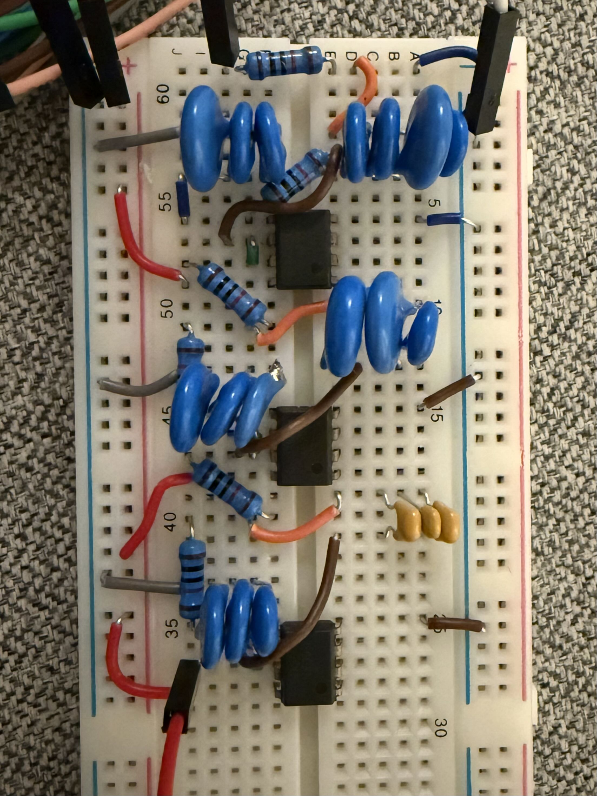
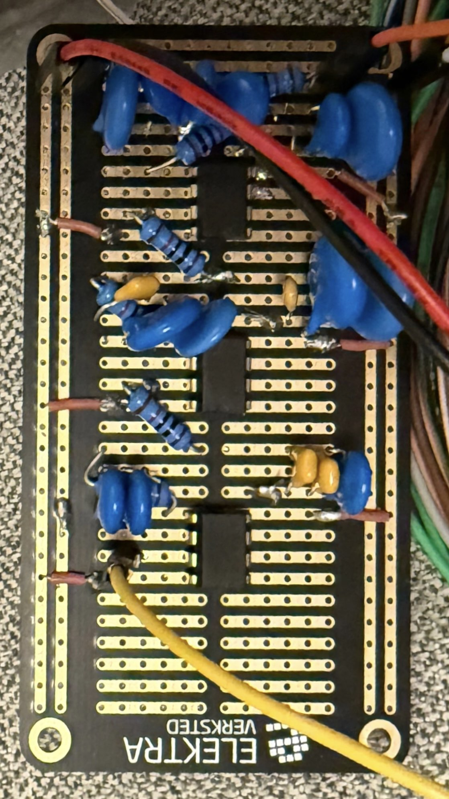
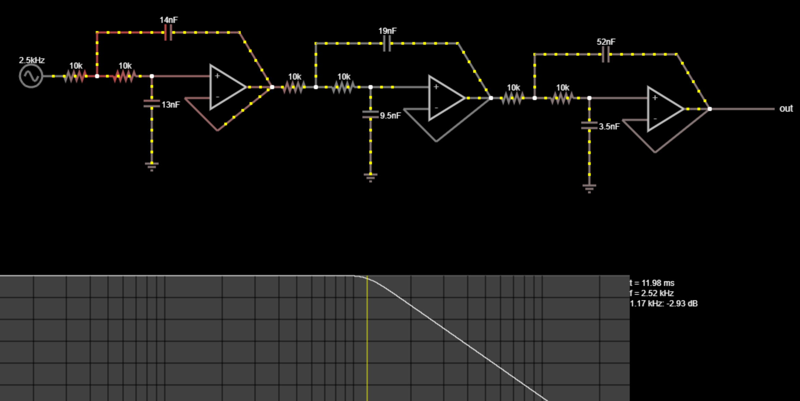
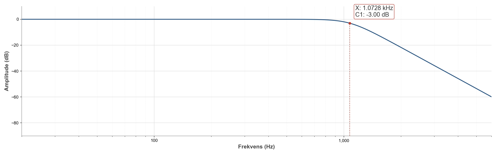

Et 6.-ordens Butterworth anti-alias-filter
Anti-aliasing for en ADC samplet ved 3 kHz: signalet må dempes med minst 10 dB ved Nyquist-frekvensen 1,5 kHz, samtidig som knekkfrekvensen holdes over 1,125 kHz så passbåndet er nyttig. En Butterworth-respons gir flatt passbånd. Mattegrunnlaget sier sjette orden. Implementasjonen er tre kaskaderte Sallen-Key-trinn med én op-amp i hvert.
Mattegrunnlaget, kort
For et Butterworth-filter er orden som trengs for å treffe demping A
ved frekvens fstop samtidig som −3 dB-knekken
fc holdes et annet sted:
n = (1/2) · ln(A⁻² − 1) / ln(f_stop / f_c)
Med A = 10−0,5, 5 % margin på begge sider og
fstop/fc ≈ 1,21, gir det
n ≈ 5,86, rundet opp til n = 6.
Tre Sallen-Key-trinn, hver med samme ω₀ = 2π·1181 Hz,
men ulike Q-faktorer satt av Butterworth-polplasseringen:
Q₁ ≈ 0,518, Q₂ ≈ 0,707, Q₃ ≈ 1,93.
Bygge rare kondensatorverdier fra standardkomponenter
Med hver R fast på 10 kΩ kom kondensatorverdiene per trinn ut som rare ikke-standardverdier (14, 13, 19, 9,5, 52, 3,5 nF). Alle ble bygd som parallellkoblinger av standardkomponenter:
- 14 nF = 10 ∥ 1,5 ∥ 1,5 ∥ 1 nF
- 13 nF = 10 ∥ 1,5 ∥ 1,5 nF
- 19 nF = 10 ∥ 6,8 ∥ 2,2 nF
- 9,5 nF = 4,7 ∥ 3,3 ∥ 1,5 nF
- 52 nF = 15 ∥ 15 ∥ 22 nF
- 3,5 nF = 1 ∥ 1 ∥ 1,5 nF
Kun parallell, med vilje: færre ledninger på brettet, og ingen risiko for at serieformelen feller deg klokka to om natten.


Målt mot beregnet
To komplette bygg, begge endte likt: stoppbåndsdempingen traff 10 dB-målet med margin (målt 11,67 dB ved 1,5 kHz), men knekkfrekvensen lå på ~1,07 kHz i stedet for designet 1,18 kHz, omtrent 10 % lavt og under spek. Simulering i Falstad med ideelle komponenter legger knekken nøyaktig der beregningen forutsier, som peker på komponenttoleranse, parasittisk kapasitans/induktans og op-ampens endelige forsterknings-båndbreddeprodukt som de skyldige.



Enkleste fiks er å designe knekkfrekvensen litt høyere for å kompensere for det systematiske skiftet ned. Komponenter med strammere toleranse og bedre kort-layout ville også hjelpe.